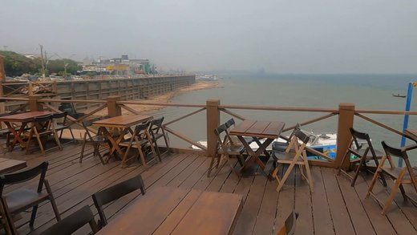

00:00:28.800
Mesas e cadeiras vazias em um deque de madeira da orla, com margem exposta pelo rio baixo e horizonte encoberto.
Orla de Santarém, Santarém (PA) · confirmado
Na abertura, Emanuel Júlio explica que o registro sobre a seca também vai tratar da fumaça das queimadas que atingiu Santarém em 2024.
Transcrição · 00:00:13 | 00:00:19 | 00:00:27 | 00:00:36
Turismo Aqui — quadro de vídeo publicado no YouTube
Referência 1